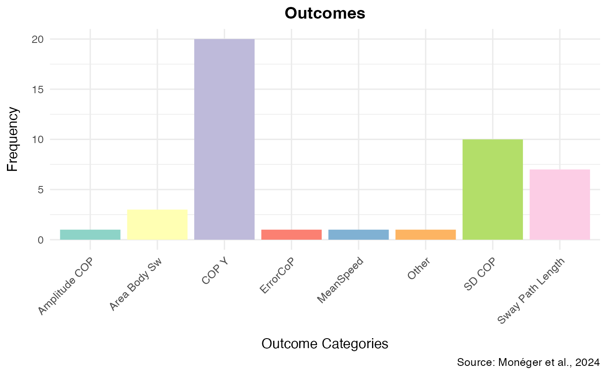

Compute Postural Indicators
Source:vignettes/Compute_Postural_Indicators.Rmd
Compute_Postural_Indicators.RmdDescription
More than 400 postural indicators can be computed from postural data
(Quijoux et al., 2021). This presents significant challenges for
reproducibility of postural studies and gives authors a great degree of
freedom that could negatively influence false discovery rate in the
literature. For this reason, based on a synthesis of a subsample of the
literature (Monéger et al., 2024), we recommend using a subsample of
indicators that are made available in the BalanceMate
package by using compute_postural_indicators.
It is possible that future versions of the package include more options, but for now, the options are restrained to CoP-X”, “CoP-Y”, Sway Path Length, Ellipse Area, SD CoP-X”, and SD CoP-Y.
The choices of these indicators were motivated by our personal literature review on postural displacements associated to passive viewing of pleasant and unpleasant pictures (see Figure 1 below; see also Monéger et al., 2024).
Figure 1. Distribution of the different postural indicators in the field. 
Usage example
You have a data set (N = 6) where participants viewed pictures for
100 seconds. The protocol sampled data at a rate of 100Hz. You first
need to manage your data output (see Merge_PosData,
Time_StampeR, and the “Manage” Chapter of the
guide book).
Each session included 20s of neutral picture viewing, then 8 trials
including 2s fixation crosses, and 8seconds critical picture viewing.
Using the Time_StampeR function from
BalanceMate, you can then extract only the relevant data
points of your critical trials (using subset).
Note: the files are stored as Rdata to reduce the size of the package – however the command only accepts txt files, hence it is required to first convert Rdata to text files before running the examples
# 1. Locate the installed extdata/ folder (contains only .RData now)
path_extdata <- system.file("extdata", package = "BalanceMate")
# 2. Find all .RData (case‐insensitive)
rdata_files <- list.files(
path_extdata,
pattern = "\\.[Rr][Dd]ata$",
full.names = TRUE
)
# 3. Convert each .RData to a .txt in a temp directory
tmpdir <- tempdir()
for (f in rdata_files) {
load(f) # e.g. loads object “Postural_DataA” into your session
nm <- tools::file_path_sans_ext(basename(f))
write.table(
get(nm),
file = file.path(tmpdir, paste0(nm, ".txt")),
sep = ",",
row.names = FALSE,
col.names = FALSE,
quote = FALSE
)
}
# 4. Merge from the tempdir
Data <- Merge_PosData(
directory_path = tmpdir,
SampleRate = 100,
SessionDuration= 100
)
# Identify the time cuts in your protocol:
cuts<-c(20,
22,
30,
32,
40,
42,
50,
52,
60,
62,
70,
72,
80,
82,
90,
92)
# Label the periods:
Label = c("Training",
"Fix",
"Trial_1",
"Fix",
"Trial_2",
"Fix",
"Trial_3",
"Fix",
"Trial_4",
"Fix",
"Trial_5",
"Fix",
"Trial_6",
"Fix",
"Trial_7",
"Fix",
"Trial_8")
Annotated_Data <- Time_StampeR(df = Data, id_col = "file_name", sample_rate = 100, protocol_duration = 100, cuts = cuts, period_names = Label)
Data <- subset(Annotated_Data, Annotated_Data$Period_Name != "Blank" & Annotated_Data$Period_Name != "Fix")Now that you have your critical data set including only the critical
trials, you can use the compute_postural_indicators to
compute any available postural indicators. You just need to indicate at
which level you would like to compute these indicators:
You can compute those at the participants level:
CompleteData <- compute_postural_indicators(Data, CoPX_col = "CoP_X", CoPY_col = "CoP_Y", ID = "file_name", indicators = c("CoP_X", "CoP_Y", "SwayPathLength", "EllipseArea", "SD_CoP_X", "SD_CoP_Y"))
head(CompleteData)
#> participant_id CoP_X CoP_Y SwayPathLength EllipseArea SD_CoP_X
#> 1 Postural_DataA.txt -1.2670799 -0.5263771 155.3003 13.646288 0.7223654
#> 2 Postural_DataB.txt -2.2829389 -1.2911082 191.0707 25.002101 0.9739908
#> 3 Postural_DataC.txt -1.8318955 -1.0023170 193.0006 34.766464 1.2235426
#> 4 Postural_DataD.txt -1.2208982 -2.1289865 139.3344 1.117320 0.1642070
#> 5 Postural_DataE.txt -1.0969192 -3.2352115 143.0198 1.669993 0.2279096
#> 6 Postural_DataF.txt -0.3283231 -2.9864867 139.2986 1.073298 0.1792604
#> SD_CoP_Y
#> 1 1.4260462
#> 2 1.4789061
#> 3 1.6197775
#> 4 0.3896092
#> 5 0.3995172
#> 6 0.3213145Or you can compute the indicators at a more narrow time-bin level. For instance, you are interested in seeing change in body sway during each trial every 1 second (epoch of 1s):
CompleteData <- compute_postural_indicators(Data, CoPX_col = "CoP_X", CoPY_col = "CoP_Y", ID = "file_name", time_col = "Time", epoch_length = 1, indicators = c("CoP_X", "CoP_Y", "SwayPathLength", "EllipseArea", "SD_CoP_X", "SD_CoP_Y"))
#> Warning in Mean_CoP_ComputeR(data, CoPX_col, CoPY_col, ID, time_col,
#> epoch_length): Unbalanced epochs detected -- Epoch is not a multiple of
#> protocol duration
#> Warning in Mean_CoP_ComputeR(data, CoPX_col, CoPY_col, ID, time_col,
#> epoch_length): Unbalanced epochs detected -- Epoch is not a multiple of
#> protocol duration
#> Warning in SPL_ComputeR(data, CoPX_col, CoPY_col, ID, time_col, epoch_length):
#> Unbalanced epochs detected -- Epoch is not a multiple of protocol duration
#> Warning in compute_ellipse_area(data, CoPX_col, CoPY_col, ID, time_col, :
#> Unbalanced epochs detected -- Epoch is not a multiple of protocol duration
#> Warning in SD_CoP_ComputeR(data, CoPX_col, CoPY_col, ID, time_col,
#> epoch_length): Unbalanced epochs detected -- Epoch is not a multiple of
#> protocol duration
#> Warning in SD_CoP_ComputeR(data, CoPX_col, CoPY_col, ID, time_col,
#> epoch_length): Unbalanced epochs detected -- Epoch is not a multiple of
#> protocol duration
head(CompleteData)
#> participant_id epoch CoP_X CoP_Y SwayPathLength EllipseArea
#> 1 Postural_DataA 1 -0.7024449 0.8916070 1.625021 0.2931300
#> 13 Postural_DataA 2 -0.5186725 0.7656363 1.568201 0.2275301
#> 22 Postural_DataA 3 -0.6890181 2.1369338 2.521197 0.6424802
#> 31 Postural_DataA 4 -0.4029652 1.9005180 1.537481 0.2057300
#> 40 Postural_DataA 5 -0.7052528 1.0709691 2.006376 1.0342947
#> 49 Postural_DataA 6 -0.4380722 0.2547817 1.334722 0.1943726
#> SD_CoP_X SD_CoP_Y
#> 1 0.17386750 0.2564255
#> 13 0.06674033 0.1832425
#> 22 0.06926711 0.6096262
#> 31 0.04483301 0.2625958
#> 40 0.13179252 0.4427927
#> 49 0.08765722 0.1496152Further readings
Lelard, T., Stins, J., & Mouras, H. (2019). Postural responses to emotional visual stimuli. Neurophysiologie clinique = Clinical neurophysiology, 49(2), 109–114. https://doi.org/10.1016/j.neucli.2019.01.005
Monéger, J., Chaby, L., Besche-Richard, C., & Vergilino-Perez, D. (online preprint, September 2024). The Effects of Exposure to Pleasant/Unpleasant stimuli on Body Posture: a Systematic Review and Meta-Analysis. Authorea. https://doi.org/10.22541/au.172724765.51726753/v1 (retrieved from https://www.authorea.com/users/835564/articles/1227818-the-effects-of-exposure-to-pleasant-unpleasant-stimuli-on-body-posture-a-systematic-review-and-meta-analysis)
Guide book on Processing postural data using BalanceMate